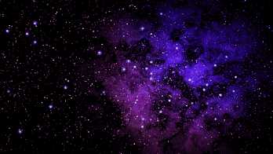

Космический архив: Солнечная система
Учебный справочник по астрономии и космонавтике
Общие сведения
Солнечная система представляет собой планетную систему, включающую центральную звезду — Солнце — и все естественные космические объекты, обращающиеся вокруг неё по гравитационным орбитам.
Система сформировалась около 4,6 млрд лет назад из гигантского протопланетного газопылевого облака. Подавляющая часть массы (более 99,8%) сосредоточена непосредственно в Солнце. Остальное вещество распределено между планетами, их спутниками, поясом астероидов и объектами пояса Койпера.

Иллюстрация: космическое пространство и объекты Солнечной системы.
Структура системы
Объекты Солнечной системы принято группировать по удаленности от центрального светила:
- Внутренняя область: четыре планеты земной группы (Меркурий, Венера, Земля, Марс), сложенные преимущественно из силикатов и металлов.
- Главный пояс астероидов: область между орбитами Марса и Юпитера, содержащая миллионы малых скалистых тел.
- Внешняя область: газовые гиганты (Юпитер, Сатурн) и ледяные гиганты (Уран, Нептун), обладающие обширными системами спутников и колец.
- Транснептуновый пояс: пояс Койпера, рассеянный диск и гипотетическое облако Оорта, являющееся источником долгопериодических комет.
Подробные физические параметры планет собраны в разделе «Планеты», а сведения об исследовательских зондах — в разделе «Миссии».